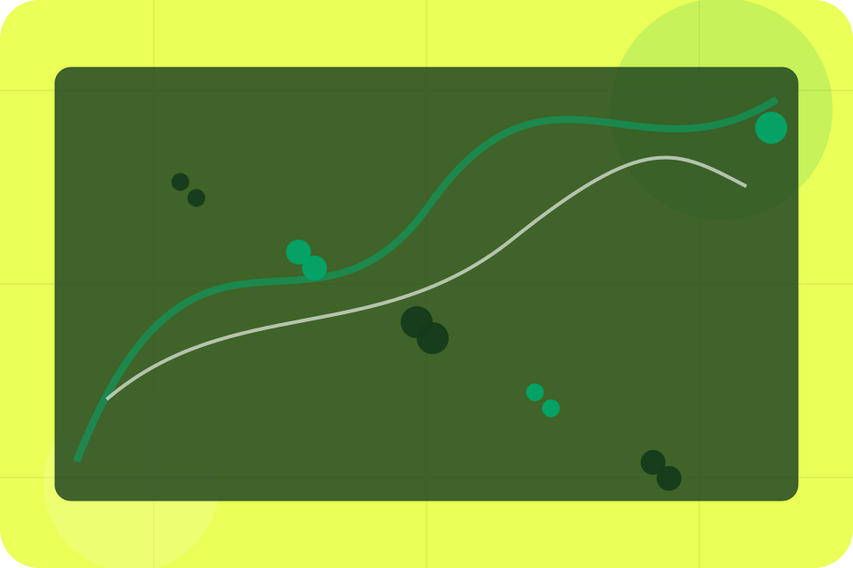
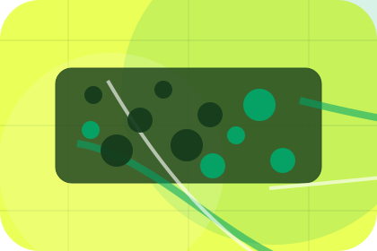
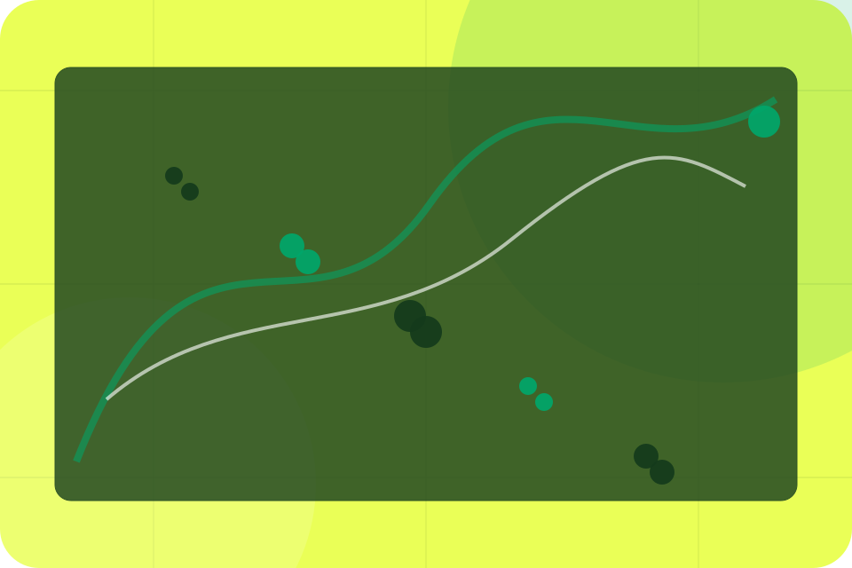
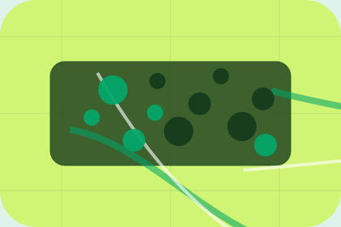

Details
What information helps Ride respond with a useful answer instead of a generic reply.
Contact / 01
Contact opens as a clear transport decision hub: what Ride offers, who it helps, why it matters, and which route to take first.
The first screen combines positioning, proof, primary action, and fast internal navigation, so people can act immediately or compare the rest of the contact route with context.
Green transit planner hero
Select the closest route and Ride keeps the next step, proof, and follow-up expectation aligned with safe reliable movement.

Contact / 02
Booking makes the contact path concrete: what to send, how the response works, and what Ride needs before visitors book a ride.
The section reduces contact friction by naming the channel, expected detail, privacy path, and response expectation instead of dropping visitors into a generic form.
Book RideRide keeps booking practical: send the key details, choose the right contact route, and know what kind of reply to expect.
Book RideGreen transit planner hero
Select the closest route and Ride keeps the next step, proof, and follow-up expectation aligned with safe reliable movement.
Contact / 03
Business makes the contact path concrete: what to send, how the response works, and what Ride needs before visitors book a ride.
The section reduces contact friction by naming the channel, expected detail, privacy path, and response expectation instead of dropping visitors into a generic form.
Book RideWhat information helps Ride respond with a useful answer instead of a generic reply.
How the visitor should think about response, urgency, location, or availability.
The expected next message keeps scope, timing, and the first practical step clear.
Contact / 04
Support explains the practical scope, best-fit situations, and expected outcome so transport visitors can compare options without decoding jargon.
The section keeps the offer concrete: what is included, who it is best for, what decision it supports, and which linked route gives the deeper detail.
Open ContactWho should use support and when it belongs in the contact journey.
The practical benefit visitors should expect after choosing this route.
Where to compare details, pricing, support, or contact options before committing.
Contact / 05
Phone makes the contact path concrete: what to send, how the response works, and what Ride needs before visitors book a ride.
The section reduces contact friction by naming the channel, expected detail, privacy path, and response expectation instead of dropping visitors into a generic form.
Book RideWhat information helps Ride respond with a useful answer instead of a generic reply.
How the visitor should think about response, urgency, location, or availability.
The expected next message keeps scope, timing, and the first practical step clear.
Contact / 06
WhatsApp makes the contact path concrete: what to send, how the response works, and what Ride needs before visitors book a ride.
The section reduces contact friction by naming the channel, expected detail, privacy path, and response expectation instead of dropping visitors into a generic form.
Book RideWhat information helps Ride respond with a useful answer instead of a generic reply.
How the visitor should think about response, urgency, location, or availability.

The expected next message keeps scope, timing, and the first practical step clear.
Contact / 07
Hours makes the contact path concrete: what to send, how the response works, and what Ride needs before visitors book a ride.
The section reduces contact friction by naming the channel, expected detail, privacy path, and response expectation instead of dropping visitors into a generic form.
Book RideRide keeps hours practical: send the key details, choose the right contact route, and know what kind of reply to expect.
Book RideContact / 08
Response makes the contact path concrete: what to send, how the response works, and what Ride needs before visitors book a ride.
The section reduces contact friction by naming the channel, expected detail, privacy path, and response expectation instead of dropping visitors into a generic form.
Book RideWhat information helps Ride respond with a useful answer instead of a generic reply.
How the visitor should think about response, urgency, location, or availability.
The expected next message keeps scope, timing, and the first practical step clear.
Contact / 09
Submit makes the contact path concrete: what to send, how the response works, and what Ride needs before visitors book a ride.
The section reduces contact friction by naming the channel, expected detail, privacy path, and response expectation instead of dropping visitors into a generic form.
Book RideWhat information helps Ride respond with a useful answer instead of a generic reply.
Contact / 10
Ride closes the contact route with a clear action, a quick reminder of the value, and a low-friction way to book a ride.
Visitors who are ready can use the primary action. Visitors who are still comparing can scan the section links, proof, and support routes before they book a ride.
Book RideThe final block keeps the choice simple: act now, compare one more proof route, or send enough detail for a focused response.
Book Ride
safe reliable movement
A passenger mobility site with green route planning, fare estimate cards, map surfaces, and fast booking. Contact ends with a direct path to book a ride, plus enough context for visitors who still need to compare.

Book RideInformation is provided for planning and should be reviewed for the final client, location, and operating rules.